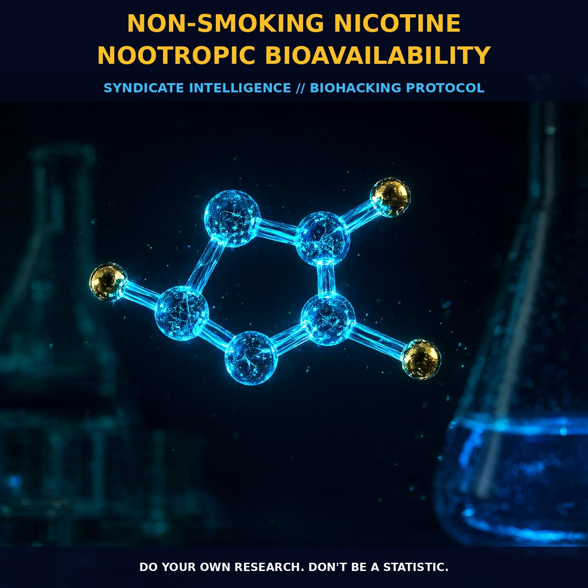

Non-Smoking Nicotine: Pharmacokinetic Optimization for Nootropic

1. Beyond the Buzz: The Pharmacokinetics of Non-Smoking Nicotine
The physiological profile of nicotine as a cognitive enhancer is fundamentally distinct from its reputation as an addictive vice. This divergence is governed primarily by delivery speed and dose magnitude. While traditional smoking propels 15 to 20 milligrams of nicotine into the brain rapidly, creating a dopamine rush that mediates strong addiction potential, non-smoking forms offer a more controlled, modulatory effect. By bypassing the lungs, oral administration avoids microbiome disruption and prevents the inhalation of problematic additives such as acetals, aldehydes, and heavy metals commonly found in e-liquids.
Absorption kinetics are critical in determining whether nicotine acts as a nootropic or a poison. Nicotine patches deliver steady baseline levels over time, while gum releases only 2 to 4 milligrams over 20 to 30 minutes, effectively avoiding the euphoric crash associated with rapid spikes. Furthermore, the half-life of nicotine is notably shorter than caffeine, lasting only 1 to 2 hours. This permits use later in the day without compromising sleep architecture, ensuring that repeated dosing does not lead to toxic accumulation provided the total daily load remains within optimal parameters for individual tolerance.
2. Neuromodulation and Motor Efficiency
Nicotine acts as a potent neuromodulator by stimulating nicotinic acetylcholine receptors, which subsequently influences dopamine and serotonin pathways to enhance vigilance and memory consolidation. Experimental psychology data indicates that nicotine may be the most reliable cognitive enhancer currently available, significantly improving coordination, reaction time, and mental fluency. Users report more controlled motor function, evidenced by faster and more precise handwriting and finger tapping, suggesting a direct impact on motor cortex efficiency and signal transmission.
The longevity of these effects is tied to its unique metabolic timeline compared to other stimulants. While caffeine persists for 5 to 6 hours, the shorter duration of nicotine allows for strategic, ad-hoc usage during periods of high cognitive demand without overloading the system. This temporal profile makes it particularly suitable for aging populations and those seeking anti-aging benefits, as low doses may support mitochondrial function without the negative impacts associated with high-dose exposure. However, caution is required for individuals under twenty-five, whose developing brains may not yet be fully optimized to handle external receptor modulation effectively.
3. Tactical Protocol for Optimal Bioavailability
For optimal nootropic bioavailability, sublingual or oral delivery of pure nicotine is preferred over inhalation, provided the source avoids artificial sweeteners and mold-related toxins like aflatoxin B-1. A dose range of 1 to 2 milligrams is considered effective for cognitive enhancement, with occasional use preventing physiological addiction cycles that typically span three days. Users can utilize small-dose products such as chewable tablets or lozenges that release approximately 4 milligrams per piece, offering sustained focus for 30 minutes to an hour without a subsequent crash.
Timing and dosage frequency are essential for maintaining sharpness while avoiding toxicity. Low-dose, divided administration is the most sensible strategy for adults over twenty-five, with some protocols suggesting up to 1 milligram two to three times per day. It is crucial to monitor individual tolerance, as excess nicotine can be toxic and potentially impair mitochondrial health, hair retention, and erectile function in susceptible individuals. Treat nicotine not as a daily necessity but as a performance tool, available for sharp moments in meetings or deep work sessions, allowing the brain to reset during periods of non-use.
4. Prostar Life Hack
The 1mg-3x Rule: For peak cognitive return without addiction drift, restrict your intake to 1 milligram, administered two to three times daily during high-demand windows. Utilize sublingual tablets or pure lozenges (free of aflatoxin and artificial sweeteners) rather than gum or vaping to ensure steady receptor engagement. This protocol leverages nicotine's short 1-2 hour half-life for focused bursts of clarity, allowing your brain to reset completely between doses and avoiding the dopamine depletion associated with constant low-level stimulation.
Prostar Life Hack
The 1mg-3x Rule: For peak cognitive return without addiction drift, restrict your intake to 1 milligram, administered two to three times daily during high-demand windows. Utilize sublingual tablets or pure lozenges (free of aflatoxin and artificial sweeteners) rather than gum or vaping to ensure steady receptor engagement. This protocol leverages nicotine's short 1-2 hour half-life for focused bursts of clarity, allowing your brain to reset completely between doses and avoiding the dopamine depletion associated with constant low-level stimulation.
[ AUTHOR: LEAD TECHNICAL RESEARCHER ]
[FRESH ON CHAIN: b335347dddd73987... ]